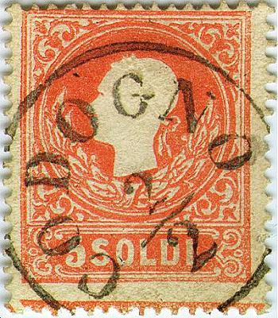
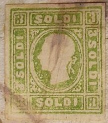

Lombardo & Veneto - Lombardei & Venetien - Lombardo & Vénétie
Return To Catalogue - Austrian Italy 1850 issue - Austrian Italy 1861-1866 - Austrian Italy cancels - Austria - Italy
Currency 100 Centesimi = 1 Lira
100 Soldi = 1 Florin (1858)
Note: on my website many of the
pictures can not be seen! They are of course present in the
catalogue;
contact me if you want to purchase the catalogue.
Click here for Austrian Italy 1850 issue.
2 s yellow 3 s black 3 s green 5 s red 10 s brown 15 s blue
These stamps are perforated 15 (reprints have different perforation). Specialists distinguish two types of these stamps; in Type 1, the ribbon at the back of the head is thin and in the shape of a '3', furthermore the spikes at the front of the head are not very large. In Type 2, the ribbon at the back of the head is thicker and forms a '8', the spikes at the front of the head are more prominent.

Type 1 and type 2
Value of the stamps |
|||
vc = very common c = common * = not so common ** = uncommon |
*** = very uncommon R = rare RR = very rare RRR = extremely rare |
||
| Value | Unused | Used | Remarks |
| 2 s | RRR | RR | |
| 3 s black | RRR | RR | |
| 3 s green | RRR | RR | |
| 5 s | R | * | |
| 10 s | RR | ** | |
| 15 s | RRR | *** | |
To fill up empty spaces in the sheets, so-called 'Andrews Crosses' were made:
(A St.Andrews Cross or St.Andreaz Kreuz in the same colour as the
stamp)
For typical cancels on these stamps, click here.
Official reprints of these stamps exists, instead of the perforation 15 they have a much wider perforation (several perforations exist ranging from 11 to 13) and even imperforated copies exist. Reprints are always in Type 2. The 2 s was also reprinted in orange. I've seen reprints with forged cancels (see the 3 s with forged 'LOMIGO 9/4' cancel above).
Fournier also offers a forgery of the 3 s black stamp in his 1914 pricelist for 1 Swiss Franc.
Some imperforate forgeries, pasted on old (genuine) documents:

I've only seen these forgeries with pencancels
For more of these Italy States and Austrian forgeries on old documents, made by the same forger, click here.
Click here for stamps of Austrian Italy issued from 1861 to 1866.


{kind=link}
{kind=link}
{kind=link}